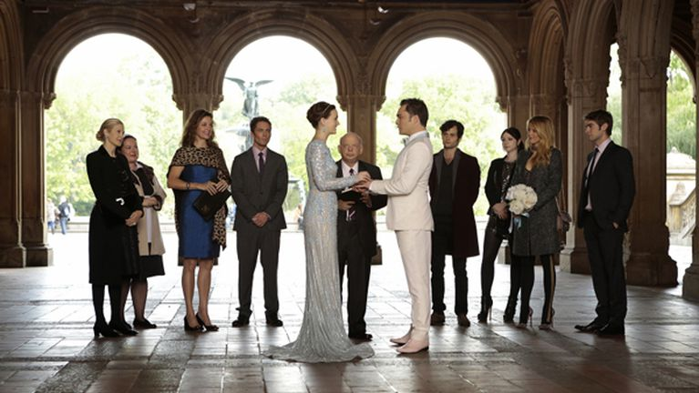
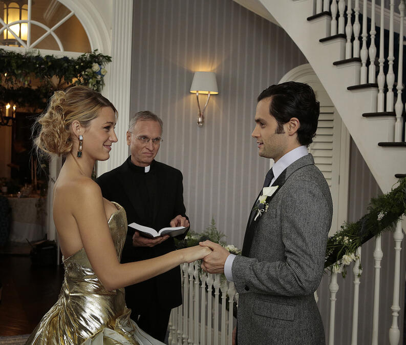

SEXTA TEMPORADA:2012
CINCO AÑOS DESPUÉS

Es la última temporada de la serie; cabe destacar que fue la más corta en la historia de la ficción, ya que constó únicamente de 11 episodios, siendo oficial el capítulo 10 el último de la serie, el 11 fue un especial de la serie donde los.productores y actores principales narran sus experiencias a lo largo del rodaje de dicha serie. En ella se cerraron todas las tramas y se reveló finalmente la identidad de "Gossip Girl". La sexta temporada se abre con los Upper East Siders trabajando juntos para encontrar a uno de los suyos. Serena se ha ido fuera de la red, incluso más allá del alcance de "Gossip Girl". Sus amigos temen lo peor y están más asustados que nunca, pero no se pueden imaginar donde la encontrarán y en qué condiciones. Mientras tanto, Blair ha ofrecido a Chuck su corazón, pero ¿será su amor suficiente para ayudarlo a recuperar su imperio? Mientras tanto, "el chico solitario" ha escrito un nuevo libro que promete hacer aún más daño y generar aún más problemas que el primero, y esta vez no tiene ningún deseo de permanecer en el anonimato. Nate está decidido finalmente a revelar la verdadera identidad de "Gossip Girl" para darle un nombre al Spectator y abrirse camino en el Upper. Serena será encontrada con un nuevo amor, con el que tendrá complicaciones por culpa de su hija adolescente, Sage.
En el último episodio de la serie, Chuck y Blair deciden contraer matrimonio para así poder escapar de la justicia, ya que ella no estaría obligada a testificar contra su marido y ellos eran los únicos presentes en aquella azotea. Mientras tanto Serena, que había decidido irse de Manhattan a L.A. tras salir a la luz el episodio escrito por Dan sobre ella, regresa a la ciudad para hablar con él y este decide contarle como empezó todo. Por último, Dan le entrega el capítulo final de su novela a Nate para que The Spectator revele quien es Gossip Girl.En el último capítulo vemos que Blair y Chuck siguen casados y ahora tienen un hijo llamado Henry, Chuck se muestra ante la audiencia como un empresario que además es buen padre y esposo, mientras que Blair se aprecia como la mujer poderosa que anhelaba ser, dirigiendo "Diseños Waldorf". Serena y Dan están a punto de casarse; Nate está soltero, su periódico "The NY Spectator" es un éxito y planea convertirse en alcalde; Jenny tiene su propia línea de ropa en colaboración con Blair "J for Waldorf" el cual se aprecia en su bolsa de compra mientras sube las escaleras para ver a Serena; se ve a Eric acompañándola; Lily y William terminan juntos y Rufus tiene una nueva novia, además de que tienen buena relación entre ellos 4;